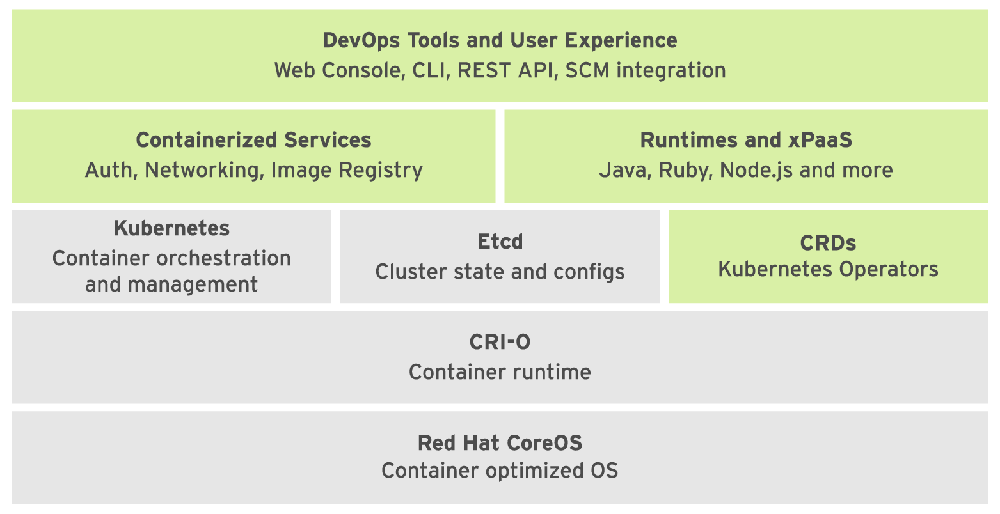
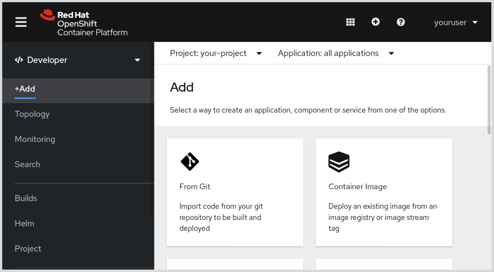

Deploying and Managing Applications
Deploying and Managing Applications on an OpenShift Cluster¶

- CoreOS: 是 OpenShift 运行时所基于的基础操作系统。是一种 Linux 发行版， 专注于为容器执行提供不可变的操作系统。
-
CRI-O: an implementation of the
Kubernetes CRI (Container Runtime Interface)to enable usingOCI (Open Container Initiative)compatible runtimes. 例如: runc(由 Docker 服务使用)或 rkt(来自于 CoreOS)。 -
Kubernetes: 管理运行容器的物理或虚拟主机集群。它使用资源描述由多种资源组成的多容器应 用，以及它们的互连方式。
- CRD / 自定义资源定义: 自定义资源定义 (CRD) 是存储在 etcd 中并由 Kubernetes 管理的资源类型。这些资源类型构成 了 OpenShift 管理的所有资源的状态和配置。
-
etcd: consistent, distributed
key-valuestore -
Containerized Service / 容器化服务: 容器化服务承担许多 PaaS 基础架构职责，如联网和授权。RHOCP 将 Kubernetes 的基本容器 基础架构和底层容器运行时用于大部分内部功能。也就是说，大部分 RHOCP 内部服务作为由 Kubernetes 编排的容器运行。
- Runtimes and xPaaS: 运行时和 xPaaS 是可随时供开发人员使用的基础容器镜像，各自预配置了特定的运行时语言 或数据库。xPaaS 产品是 JBoss EAP 和 ActiveMQ 等红帽中间件产品的一组基础镜像。红帽 OpenShift 应用运行时 (RHOAR) 是针对 OpenShift 中云原生应用优化的一组运行时。可用的应 用运行时有红帽 JBoss EAP、OpenJDK、Thorntail、Eclipse Vert.x、Spring Boot 和 Node.js。
- DevOps Tools & User Experience: RHOCP 提供 Web UI 和 CLI 管理工具，以用于管理用戶应用和 RHOCP 服务。OpenShift Web UI 和 CLI 工具从 REST API 构建，后者可通过 IDE 和 CI 平台等外 部工具加以利用。
重要的资源类型¶
Routes / 路由是可被 OpenShift 路由器识别为集群中部署的 各种应用和微服务 入口点的 DNS 主机名。
oc new-app 创建应用¶
OpenShift 主要支持以下几种 部署容器化应用 的方法，用--strategy进行区分: source, docker or pipeline
1.--strategy=source¶
Combines your application source code with a base image.
You can choose the base image using [baseImage]~, if NOT, OpenShift will attempt to detect the best-matching builder image by examining the files(requirements.txt or package.json).
以下 3 种方法都会得到同样的结果：
oc new-app python:3.9~https://github.com/your-repo
oc new-app -i python:3.9 https://github.com/your-repo
oc new-app -i python:3.9 --strategy source --code https://github.com/your-repo
2. --strategy=docker¶
searches for a Dockerfile in the repository. Useful when you need full control over how the image is built.
oc new-app https://github.com/your-repo --strategy=docker
3. --strategy=pipeline¶
requires a pipeline definition file Jenkinsfile or Tekton Pipeline. Suitable for CI/CD workflows where multiple steps (e.g., build, test, deploy)
oc new-app https://github.com/your-repo --strategy=pipeline
Info
Customization Level from LOW to HIGH: source < docker < pipeline
~ VS --image-stream (-i)
波形符 (~) 和 --image-stream (-i) 选项工作方式不同，-i 选项要求在本地安装 git 客戶端，因为语言检测需要克隆存储库，从而能检查项目，而波形符 (~) 表示法则不会这样。
导入镜像流
要创建镜像流，最简单的方法就是使用带有--confirm 选项的 oc import-image 命令
oc import-image myis --confirm \
--from registry.acme.example.com:5000/acme/awesome --insecure
4. 现有的 镜像 直接部署¶
某个registry中已存在创建好的 容器化应用/镜像, 用 --docker-image旗帜实现:
oc new-app \
--docker-image \
registry.access.redhat.com/rhel7-mysql57
可用旗帜¶
| 选项 | 描述 |
|---|---|
--as-deployment-config |
create DeploymentConfig instead of Deployment. DC is slowly deprecated! |
--code |
Provides Github URL as S2I input |
--context-dir |
Directory in git repository |
--docker-image |
Use Image from Docker Hub to create App |
--dry-run |
设置为 true，以显示操作结果而不执行该操作。 |
--docker-image or -i |
Use Image from Docker Hub to create App |
--strategy |
source, docker or pipeline |
--name |
给部署一个名字 |
-e |
给Application Pod定义环境变量 |
--build-env |
给Builder Pod定义环境变量（即在构建过程中需要的） |
OpenShift 4.6
OpenShift 4.6 中，oc new-app 命令现在默认生成 Deployment 资源，而不是 DeploymentConfig 资源
生成资源¶
BuildConfig和它的实例BuildImageStream:有两种情况：- 指向在Internal Registry中生成的Image
- 指向external Registry中已存在的Image
Deployment：包括Deployment自身生成的ReplicaSet和PodService: 如果使用的image没用声明任何port，则不会生成Service
Web Console¶
Web控制台不提供完整的集群管理功能。比如：+Add按钮提供和oc new-app命令相似的功能：

Build Config的详情⻚面提供 Details、YAML、Builds、Environment 和 Events 选项卡，以及含有 StartBuild操作的Actions按钮。该操作的功能与oc start-build命令相同。如果应用源代码存储库未配置为使用 OpenShift Web hook，那么在将更新推送至应用源代码后，您 需要使用 Web 控制台或 CLI 来触发新构建
Warning
Not all resource management operations can be performed using the web console. Cluster administrator operations, in particular, usually require the CLI.
用户类型¶
- 集群管理员/Cluster Administrator: 管理项目、添加节点(Node)、创建持久卷(Persistent volumes)、分配项目配额(project quotas)，以及执行其他集群范围的管理任务。
- 项目管理员/Project(Namespace) Administrator: 管理项目中的资源、分配资源限额，并且向其他用戶授予查看和管理项目资源的权限。
- 开发者/Developer：管理项目资源的一个子集。该子集包括构建和部署应用所需的各种资源，如构建和部署配置、持久卷声明、服务、机密和路由。开发人员无法针对这些资源向其他用戶授予任何权限，也无法管理大多数的项目级资源(如资源限制)
Debug¶
| 命令类型 | 具体命令 |
|---|---|
| 状态信息（status） | oc status oc get |
| 资源描述（resource description） | oc describe oc get -o |
| 日志信息（log） | oc logs |
describe VS get
oc describe可以显示资源的相关详细信息oc get只会显示与所请求资源相关的信息，比如oc get buildconfig只会显示与buildconfig相关的，不会显示与之对应的build
Improving Containerized Application Logs¶
OpenShift also provides an optional logging subsystem, based on the EFK stack (Elasticsearch, Fluentd, and Kibana). The logging subsystem provides long-term storage and search capabilities for both OpenShift cluster nodes and application logs.
Interaction with Container¶
如果以上命令无法提供有效信息，可以使用oc cp或oc rsh与容器直接进行交互。
1. oc cp¶
- Purpose: Copies files between a local machine and a pod.
-
Usage:
Now you can check the file on your local machine in# oc cp <source> <destination> oc cp mypod:/path/in/pod /local/path oc cp /local/path mypod:/path/in/pod/tmp/frontend-server.log.oc cpthis CLI requires tar command installed on the machine, otherwise you will not be able to run it.
2. oc rsync¶
- Purpose: Synchronizes files or directories between a local machine and a pod.
-
Usage:
# oc rsync <source> <destination> oc rsync mypod:/path/in/pod /local/path oc rsync /local/path mypod:/path/in/pod优点
- Handles large files more efficiently than
oc cp. - Can resume interrupted transfers.
- Handles large files more efficiently than
3. oc rsh¶
- Purpose: Opens an interactive shell session in a running pod.
-
Usage:
# oc rsh <pod-name> oc rsh -t frontend-1-zvjhbshell
容器中有什么shell工具就用什么工具
模版¶
| 命令 | 描述 |
|---|---|
oc get template -n openshift |
查看OpenShift提供的模版 |
oc create -f ~/php-mysql-ephemeral.json -n common-project |
在名为common-project的Project中，用给出的json文件新建一个template |
oc new-app --template common-project/php-mysql-ephemeral -p DATABASE_USR=user1 -n my-project |
其中的-p表示该template中的参数/parameter |
一般来说，我们鼓励大家在公用的项目（比如这里的common-project）中添加模版，以方便在私人的项目中（这里的my-project）对其进行共享和重用 |
其他命令¶
| 命令 | 描述 |
|---|---|
oc status |
|
oc logs echo-555xx | tail -n 3 |
|
oc logs echo-555xx | head -n 3 |
|
oc describe bc echo |
|
oc describe is echo |
|
oc start-build bc echo |
|
oc delete all -l app=echo |
|
oc cp frontend-1-zvjhb:/var/log/httpd/error_log \ /tmp/frontend-server.log |
copy the log in the Container to local pc 注意： oc cp命令需要基础应用容器镜像提供tar命令，以便能正常发挥作用。如果应用容器内没有安装 tar，那么oc cp会失败。注意： <Pod名>:<文件路径> |
oc rsync |
oc rsync命令可使本地文件夹与正在运行的容器中的远程文件夹同步。它会使用本地rsync命令 来减小带宽使用量，但无需容器镜像提供 rsync 或 ssh 命令。 |
oc rsh oc rsh -t frontend-1-zvjhb oc rsh frontend-1-zvjhb ps ax |
创建远程 shell 以执行容器中 的命令。该命令会使用 OpenShift 主控机 API 来创建通向远程容器集的安全隧道 |
| `` | |
| `` | |
| `` |